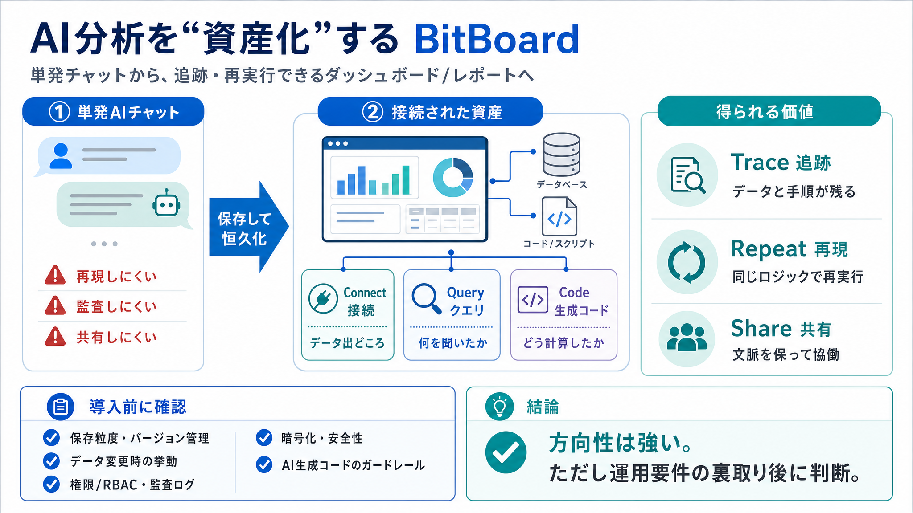

BitBoard: Let your agent build dashboards and reporting. | Y Combinator
Data analysis with AI agents is great until you realize you want to set up a recurring report or collaborate with your t…

AI分析を資産化する
BitBoardは、AIチャット/コーディングエージェントで作った分析を、ダッシュボードやレポートという“接続された恒久的資産”として構築します。
単発チャットの限界
従来のAIチャット分析は、やりとりが“一回きりのスレッド”になりがちで、再実行・監査・チーム共有が難しくなります。
スレッド→資産
分析を、チャットの中の一時的な結果ではなく、接続・クエリ・コードと一体化した“耐久性のある資産”に変えます。
中核は保存
接続（どのデータに繋いだか）、クエリ、生成コードを保存し、データの出どころとロジックを把握したまま再実行できます。
（用語）traceable and repeatable：追跡可能・再実行可能
最小セットアップ
BitBoardはデータソースに直接アクセスし、ライブ接続またはエージェントからのプッシュで、既存接続を活かした最小セットアップを狙います。
生成→資産化
AIが分析して終わりではなく、接続されたまま保存・共有される形に落とし込みます。
（用語）logic and context：ロジックと文脈
単発分析 vs 資産分析
AIチャット結果を“スレッドで完結”させるか、“接続されたレポート/ダッシュボード”として残すかで、運用のしやすさが変わります。
価値の中心
この設計思想は、分析の“便利さ”を、監査性・再現性・共有性といったビジネス要件へ接続することを狙っています。
前に出てくる要素
未確定ポイント
提示文だけでは、導入判断に必要な“運用の確実性”を検証できません。
AI生成コード/クエリの誤動作・不適切な権限行使へのガードレールも不明。
私見（結論）
価値の方向性は納得できる一方で、実装・運用要件の裏取りが未完のため、現時点では導入判断を保留すべきです。
次のアクション
BitBoardの“traceable & repeatable”が、あなたの現場で本当に運用可能かを、仕様・セキュリティ・データ整合性まで確認してください。
Data analysis with AI agents is great until you realize you want to set up a recurring report or collaborate with your t…
Y Combinator 1,466,658 followers BitBoard is like hiring a remote contractor that quietly handles your workflow in the b…
# BitBoard (YC P25) – AI agents for healthcare back-offices. We were early employees at Forward, which provided primary …
AI-powered tool to build, update, and analyze spreadsheets through natural language. Use cases: Automating monthly finan…
Ready-to-go AI agents for every team. # AI Agents Built for Teams: Shared Context and Transparency in Enterprise AI. AI …